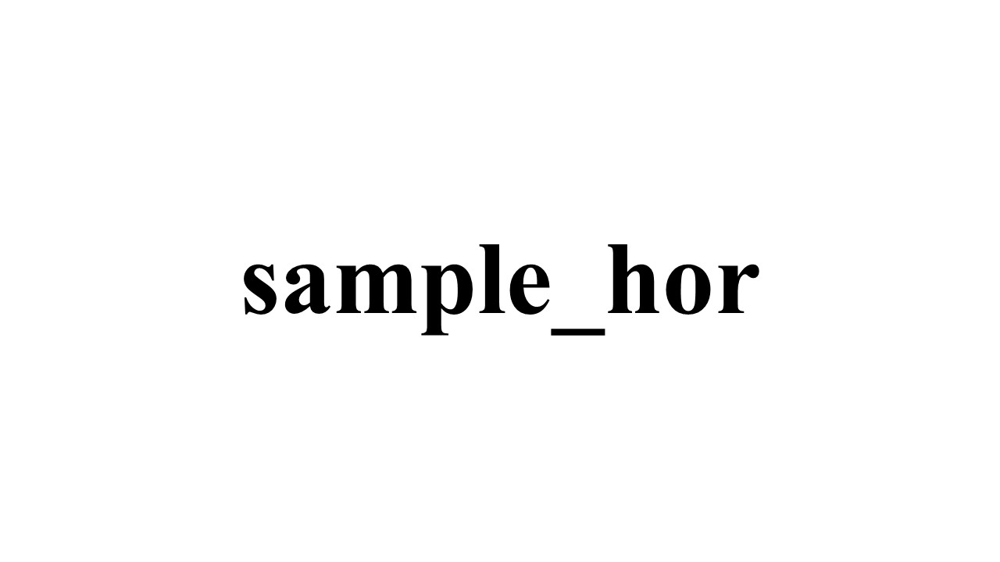
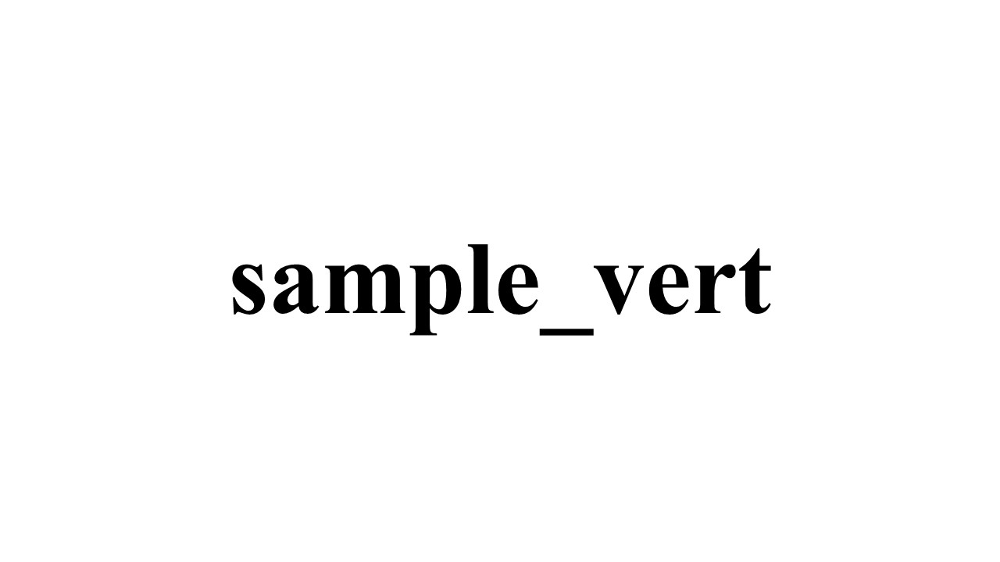

<!DOCTYPE html>
<html lang="ja">
  <head>
    <meta charset="UTF-8" />
    <title>テスト用</title>
    <script src="jspsych/dist/jspsych.js"></script>
    <script src="jspsych/dist/plugin-survey-multi-choice.js"></script>
    <script src="jspsych/dist/plugin-html-button-response.js"></script>
    <script src="jspsych/dist/plugin-html-keyboard-response.js"></script>
    <script src="jspsych/dist/plugin-image-button-response.js"></script>
    <script src="https://unpkg.com/@jspsych-contrib/plugin-pipe"></script>
    <link rel="stylesheet" href="jspsych/dist/jspsych.css" />
    <style>
      img {
        height: 600px !important;
        display: block;
        margin: auto;
      }
    </style>
  </head>
  <body></body>
  <script>
    const jsPsych = initJsPsych();

    const subjectID = jsPsych.randomization.randomID(10);
    const filename = `${subjectID}.csv`;
    const filenameNotConsented = `${subjectID}_notConsented.csv`;
    const filenameNotNativeLanguage = `${subjectID}_notNativeLanguage.csv`;

    const pcFormIntro = {
      type: jsPsychHtmlButtonResponse, // PC以外に大きめのタブレットもあるが、どうする
      stimulus: `
        <h3>このフォームはPC回答者向けです。</h3>
          <p>本研究では、調査・実験を行うにあたりPCを使用します。</p>
          <p>ウィンドウを最大化できましたら、ボタンをクリックして研究概要の説明へ進んでください。</p>
          <p>（実験終了まで、ウィンドウは最大化した状態にしてください。）</p>
        `,
      choices: ["説明へ進む"],
    };

    let consentFinalAnswer;

    const questionsIC = [
      { prompt: "研究の意義、目的、方法など", name: "consent_1" },
      { prompt: "研究成果の公表の可能性", name: "consent_2" },
      {
        prompt: "収集するデータの種類、収集方法、機関、所要時間など",
        name: "consent_3",
      },
      { prompt: "対象者に選ばれた理由", name: "consent_4" },
      {
        prompt:
          "研究に参加することにより予測される対象者にとって、また社会にとっての利益",
        name: "consent_5",
      },
      { prompt: "個人情報の保管・管理方法、廃棄について", name: "consent_6" },
      { prompt: "研究への参加は任意であること", name: "consent_7" },
      {
        prompt: "参加に同意しない場合もいかなる不利益を受けないこと",
        name: "consent_8",
      },
      {
        prompt: "同意はいつでも不利益を受けずに撤回できること",
        name: "consent_9",
      },
    ];

    const informedConsent = {
      type: jsPsychSurveyMultiChoice,
      preamble: `<style>
        .consent-wrapper {
          padding-left: 30px;
          padding-right: 30px;
          text-align: left;
        }
        .jspsych-survey-multi-choice-question {
          padding-left: 30px !important;
          padding-right: 30px !important;
          text-align: left !important;
        }
        .jspsych-survey-multi-choice-horizontal .jspsych-survey-multi-choice-option {
          margin-left: 30px;
        }
        </style>
        <div class="consent-wrapper">
          <h2 style="text-align: center;">〇〇〇に関する研究</h2>
            <h3 style="padding-top: 5em;">1. この研究について</h3>
              <h4>(1) 研究の意義、目的、方法など</h4>
                <p>　本研究は、〇〇〇を調べるものです。この研究により、〇〇〇に関する手がかりが得られる可能性があります。</p>
              <h4>(2) 研究成果の公表の可能性</h4>
                <p>　この研究で得られた成果は、国内外の学術大会や研究雑誌にて発表される可能性があります。データには統計的な処理が行われるため、成果の公表に際して個人が特定されることはありません。また、他の研究者が本研究の結果を検証できるよう、データを匿名化したうえで公表する場合もあります。</p>
              <h4>(3) 収集するデータの種類、収集方法、期間、所要時間など</h4>
                <p>　この研究では、PC上で主に2種類のデータを収集いたします。1点目に、いくつかの質問項目にご回答いただくことで得られる調査データです。2点目に、実験で提示される画像を選択していただくことで得られる実験データです。データの収集は1回のみで、〇〇年〇〇月頃に行われます。研究参加にかかる所要時間はおよそ〇〇分です。</p>
              <h4>(4) 対象者に選ばれた理由</h4>
                <p>　この研究では、〇〇〇を対象に研究協力者を募集することにしました。</p>
              <h4>(5) 研究に参加することにより予測される対象者にとって、また社会にとっての利益</h4>
                <p>　この研究の実施によって、〇〇〇に関する手がかりが得られることが期待されます。</p>
            <h3 style="padding-top: 5em;">2. 個人データの取り扱いについて</h3>
              <p>　得られたデータは成果公表後、最低10年間保管され、その後破棄されます。データは、研究代表者のPCにてパスワードを設定したうえで保管します。また、得られたデータはすべて匿名であり、個人情報を特定する情報は含まれませんのでご安心して研究にご参加いただけます。</p>
            <h3 style="padding-top: 5em;">3. 研究への参加について</h3>
              <p>　本研究への参加は任意であり、参加に同意しない場合でも成績に影響しません。また、同意は研究実施期間中であればいつでも不利益を受けずに撤回できます。</p>
            <h3 style="padding-top: 5em;">4. この研究に関する問い合わせ先</h3>
              <p>〈研究者連絡先〉</p>
              <p>氏名　所属・職名</p>
              <p>住所　メールアドレス：<span id="emailConsent"></span></p>
            <h3 style="padding-top: 5em;">■ 以下の項目について理解できたかどうか、当てはまる選択肢にチェックを付けてください。</h3>
        </div>`,
      questions: questionsIC
        .map((q) => ({
          prompt: q.prompt,
          name: q.name,
          options: ["はい", "いいえ"],
          required: true,
        }))
        .concat([
          {
            prompt: `<span style='font-size: 1.17em; font-weight: bold; margin-top: 5em; display: inline-block;'>■ あなたは日本語母語話者ですか？ / If Japanese is not your native language, please select "No".</span>`,
            name: "native_language",
            options: ["はい / Yes", "いいえ / No"],
            required: true,
          },
          {
            prompt:
              "<span style='font-size: 1.17em; font-weight: bold; margin-top: 5em; display: inline-block;'>■ 調査趣旨を理解したうえで、あなたはこの研究に参加することに同意しますか？</span>",
            name: "consent_final",
            options: ["はい", "いいえ"],
            required: true,
          },
        ]),
      button_label: "次へ",
      on_load: () => {
        const el = document.getElementById("emailConsent");
        if (el) el.textContent = "〇〇〇" + "@" + "gmail.com";
      },
    };

    const saveDataNotNativeLanguage = {
      type: jsPsychPipe,
      action: "save",
      experiment_id: "jh5fFR9uGbkX", // DataPipeよりIDを取得
      filename: filenameNotNativeLanguage,
      data_string: () => jsPsych.data.get().csv(),
    };

    const saveDataNotConsented = {
      type: jsPsychPipe,
      action: "save",
      experiment_id: "jh5fFR9uGbkX", // DataPipeよりIDを取得
      filename: filenameNotConsented,
      data_string: () => jsPsych.data.get().csv(),
    };

    let shouldEndNotNativeLanguage = false;
    let shouldEndNotConsented = false;

    const endIfNotNativeLanguage = {
      timeline: [
        {
          type: jsPsychHtmlButtonResponse,
          stimulus: `
            <h3>本研究は日本語母語話者を対象としているため、ここで終了します。</h3>
              <p>ボタンを押して回答を送信し、完了するまでそのままお待ちください。</p>
            `,
          choices: ["回答を送信"],
        },
        saveDataNotNativeLanguage,
        {
          type: jsPsychHtmlKeyboardResponse,
          stimulus: `
            <h3>回答の送信が正常に完了しました。</h3>
              <p>研究へのご協力ありがとうございました。</p>
              <p>タブを閉じると終了できます。</p>
              <p style="font-weight: bold; padding-top: 3em;">問い合わせ先</p>
              <p>氏名（メール：<span id="emailNotNativeLanguage"></span>）</p>
            `,
          choices: "NO KEYS",
          on_load: () => {
            const el = document.getElementById("emailNotNativeLanguage");
            if (el) el.textContent = "〇〇〇" + "@" + "gmail.com";
          },
        },
      ],
      conditional_function: function () {
        return shouldEndNotNativeLanguage;
      },
    };

    const endIfNotConsented = {
      timeline: [
        {
          type: jsPsychHtmlButtonResponse,
          stimulus: `
            <h3>研究への参加に同意されなかったため、ここで終了します。</h3>
              <p>ボタンを押して回答を送信し、完了するまでそのままお待ちください。</p>
            `,
          choices: ["回答を送信"],
        },
        saveDataNotConsented,
        {
          type: jsPsychHtmlKeyboardResponse,
          stimulus: `
            <h3>回答の送信が正常に完了しました。</h3>
              <p>研究へのご協力ありがとうございました。</p>
              <p>タブを閉じると終了できます。</p>
              <p style="font-weight: bold; padding-top: 3em;">問い合わせ先</p>
              <p>氏名（メール：<span id="emailNotConsented"></span>）</p>
            `,
          choices: "NO KEYS",
          on_load: () => {
            const el = document.getElementById("emailNotConsented");
            if (el) el.textContent = "〇〇〇" + "@" + "gmail.com";
          },
        },
      ],
      conditional_function: function () {
        return shouldEndNotConsented;
      },
    };

    function getLastConsentResponse() {
      const consentTrials = jsPsych.data
        .get()
        .filterCustom(
          (trial) =>
            trial.consent_type === "first" || trial.consent_type === "repeat"
        )
        .values();
      return consentTrials[consentTrials.length - 1]?.response || {};
    }

    const informedConsentFirst = {
      ...informedConsent,
      data: { consent_type: "first" },
      on_finish: function (data) {
        if (data.response.native_language === "いいえ / No") {
          shouldEndNotNativeLanguage = true;
        } else if (data.response.consent_final === "いいえ") {
          shouldEndNotConsented = true;
        }
      },
    };

    const informedConsentRepeat = {
      ...informedConsent,
      data: { consent_type: "repeat" },
      on_finish: function (data) {
        if (data.response.native_language === "いいえ / No") {
          shouldEndNotNativeLanguage = true;
        } else if (data.response.consent_final === "いいえ") {
          shouldEndNotConsented = true;
        }
      },
    };

    const consentWarning = {
      type: jsPsychHtmlButtonResponse,
      stimulus: `
        <h3 style="color: red;">回答にエラーがあります。</h3>
          <p>「いいえ」を選択した項目がある一方で、研究への参加に「同意する」と回答しています。</p>
          <p>ご理解いただいているか再確認のうえ、再度ご回答ください。</p>
        `,
      choices: ["回答に戻る"],
    };

    const consentLoop = {
      timeline: [
        consentWarning,
        informedConsentRepeat,
        endIfNotNativeLanguage,
        endIfNotConsented,
      ],
      loop_function: function () {
        const consentTrials = jsPsych.data
          .get()
          .filter({ consent_type: "repeat" })
          .values();
        if (consentTrials.length === 0) return false;
        const lastConsent =
          consentTrials[consentTrials.length - 1].response || {};
        if (shouldEndNotNativeLanguage || shouldEndNotConsented) return false;
        const hasNo = questionsIC.some((q) => lastConsent[q.name] !== "はい");
        return hasNo;
      },
    };

    const afterFirstConsent = {
      timeline: [
        endIfNotNativeLanguage,
        endIfNotConsented,
        {
          timeline: [consentLoop],
          conditional_function: function () {
            const consentTrials = jsPsych.data
              .get()
              .filter({ consent_type: "first" })
              .values();
            if (consentTrials.length === 0) return false;
            const resp = consentTrials[consentTrials.length - 1].response || {};
            if (shouldEndNotNativeLanguage || shouldEndNotConsented)
              return false;
            return questionsIC.some((q) => resp[q.name] !== "はい");
          },
        },
      ],
    };

    const surveyIntro = {
      type: jsPsychHtmlButtonResponse,
      stimulus: `
        <h3>調査セクションへ進みます。</h3>
          <p>各項目について、当てはまる選択肢を選んでください。</p>
        `,
      choices: ["調査へ進む"],
    };

    const demographics = {
      type: jsPsychSurveyMultiChoice,
      questions: [
        {
          prompt: "年齢",
          name: "age",
          options: [
            "17歳以下",
            "18歳",
            "19歳",
            "20歳",
            "21歳",
            "22歳",
            "23歳",
            "24歳",
            "25歳",
            "26歳",
            "27歳",
            "28歳以上",
          ],
          required: true,
        },
        {
          prompt: "性別",
          name: "gender",
          options: ["男性", "女性", "その他／回答しない"],
          required: true,
        },
      ],
      preamble: "<h3>下記のことについて教えてください。</h3>",
      button_label: "次へ",
    };

    const questionsHSP = [
      { prompt: "調査項目1", name: "eoe_1" },
      { prompt: "調査項目2", name: "eoe_2" },
      { prompt: "調査項目3", name: "eoe_3" },
      {
        prompt: "調査項目4",
        name: "eoe_4",
      },
      {
        prompt: "調査項目5",
        name: "eoe_5",
      },
      {
        prompt: "調査項目6",
        name: "lst_1",
      },
      { prompt: "調査項目7", name: "lst_2" },
      {
        prompt: "調査項目8",
        name: "lst_3",
      },
      {
        prompt: "調査項目9",
        name: "aes_1",
      },
      { prompt: "調査項目10", name: "aes_2" },
    ];

    const choicesHSP = [
      "選択肢1",
      "選択肢2",
      "選択肢3",
      "選択肢4",
      "選択肢5",
      "選択肢6",
      "選択肢7",
    ];

    const shuffledQuestionsHSP = jsPsych.randomization
      .shuffle(questionsHSP)
      .map((q) => ({
        prompt: q.prompt,
        name: q.name,
        options: choicesHSP,
        required: true,
      }));

    const hsp = {
      type: jsPsychSurveyMultiChoice,
      questions: shuffledQuestionsHSP,
      preamble:
        "<h3>これらの項目について、あなた自身にもっとも当てはまると思う選択肢を選んでください。</h3>",
      button_label: "次へ",
    };

    const experimentIntro = [
      {
        type: jsPsychHtmlButtonResponse,
        stimulus: `
          <h3>実験セクションへ進みます。</h3>
            <p>はじめに、実験に関する説明を行います。</p>
          `,
        choices: ["実験へ進む"],
      },
      {
        type: jsPsychHtmlButtonResponse,
        stimulus: `
          <p>あなたが美術館のギャラリーにいると想像してください。そこには、多くの写真が壁に飾られています。</p>
          <p>それらを眺めていると、第一印象で他のものより良いと感じるものがいくつかあります。</p>
          <p>人々は、芸術作品やその配置について異なる好みを持っています。</p>
          <p>私はあなたの好みを知ることに興味があります。</p>
          `,
        choices: ["次へ"],
      },
      {
        type: jsPsychHtmlButtonResponse,
        stimulus: `
          <p>まもなく、異なる配置で並べられた複数の写真セットが表示されます。</p>
          <p>各写真セットには、2つの配置が表示されます。</p>
          <p>表示された写真セットに対して、あなたがどちらの配置をより良いと感じるかという直感的な判断に、私は興味があります。</p>
          <p>ボタンをクリックし、例をご覧ください。</p>
          `,
        choices: ["次へ"],
      },
      {
        type: jsPsychHtmlButtonResponse,
        stimulus: `
          <p style="text-align: center;">いくつかの写真セットは水平に配置されています。ボタンをクリックして例を表示してください。</p>
          `,
        choices: ["例を表示"],
      },
      {
        type: jsPsychHtmlButtonResponse,
        stimulus: `
          
          `,
        choices: ["次へ"],
      },
      {
        type: jsPsychHtmlButtonResponse,
        stimulus: `
          <p style="text-align: center;">また、いくつかの写真セットは垂直に配置されています。ボタンをクリックして例を表示してください。</p>
          `,
        choices: ["例を表示"],
      },
      {
        type: jsPsychHtmlButtonResponse,
        stimulus: `
          
          `,
        choices: ["次へ"],
      },
      {
        type: jsPsychHtmlButtonResponse,
        stimulus: `
          <p>これらの配置をご覧いただきながら、各スタイルがギャラリーの壁にどのように映るかを想像してください。</p>
          <p>どのスタイルがより良いと感じるか、直感的な感想をお聞かせください。</p>
          <p>分析したり考え込んだりせず、直感に従ってご回答ください。</p>
          <p>準備が整いましたら、ボタンをクリックして回答を開始してください。</p>
          `,
        choices: ["回答を開始"],
      },
    ];

    function shuffle(array) {
      let currentIndex = array.length,
        randomIndex;
      while (currentIndex !== 0) {
        randomIndex = Math.floor(Math.random() * currentIndex);
        currentIndex--;
        [array[currentIndex], array[randomIndex]] = [
          array[randomIndex],
          array[currentIndex],
        ];
      }
      return array;
    }

    function randomAB() {
      return Math.random() < 0.5 ? "a" : "b";
    }

    function preparePhotoList() {
      let valence = { vert: [], hor: [] };
      let time = { vert: [], hor: [] };
      let fillers = { vert: [], hor: [] };
      for (let i = 1; i <= 8; i++) {
        // GitHubに公開後、以下6行のパスを `/2501_photo-pref/project/materials/(各ファイル名)` に変更
        valence.vert.push(`materials/valence_vert_${i}${randomAB()}.JPG`);
        valence.hor.push(`materials/valence_hor_${i}${randomAB()}.JPG`);
        time.vert.push(`materials/time_vert_${i}${randomAB()}.JPG`);
        time.hor.push(`materials/time_hor_${i}${randomAB()}.JPG`);
        fillers.vert.push(`materials/filler_vert_${i}.JPG`);
        fillers.hor.push(`materials/filler_hor_${i}.JPG`);
      }
      return { valence, time, fillers };
    }

    function createTrials(group, photos) {
      const { valence, time, fillers } = photos;
      const val_vert = shuffle(valence.vert).slice(0, 4);
      const val_hor = shuffle(valence.hor).slice(0, 4);
      const time_vert = shuffle(time.vert).slice(0, 4);
      const time_hor = shuffle(time.hor).slice(0, 4);
      const fill_vert = shuffle(fillers.vert).slice(0, 4);
      const fill_hor = shuffle(fillers.hor).slice(0, 4);

      const hor_block = shuffle([...val_hor, ...time_hor, ...fill_hor]);
      const vert_block = shuffle([...val_vert, ...time_vert, ...fill_vert]);

      const all_photos =
        group === "hor-vert"
          ? [...hor_block, ...vert_block]
          : [...vert_block, ...hor_block];

      return all_photos.map((imgPath, index) => ({
        type: jsPsychImageButtonResponse,
        stimulus: imgPath,
        stimulus_height: 600,
        prompt:
          "<p>2つのうち、より良いと感じるほうのボタンを選択してください。</p>",
        choices: ["A", "B"],
        data: { trial_index: index + 1, group: group, stimulus: imgPath },
      }));
    }

    const group = Math.random() < 0.5 ? "hor-vert" : "vert-hor";
    const photos = preparePhotoList();
    const trials = createTrials(group, photos);

    const endMessage = {
      type: jsPsychHtmlButtonResponse,
      stimulus: `
        <h3>実験は以上です。</h3>
          <p>ボタンを押して回答を送信し、完了するまでそのままお待ちください。</p>
        `,
      choices: ["回答を送信"],
    };

    const saveData = {
      type: jsPsychPipe,
      action: "save",
      experiment_id: "jh5fFR9uGbkX", // DataPipeよりIDを取得
      filename: filename,
      data_string: () => jsPsych.data.get().csv(),
    };

    const saveDataCompleted = {
      type: jsPsychHtmlKeyboardResponse,
      stimulus: `
        <h3>回答の送信が正常に完了しました。</h3>
          <p>研究へのご協力ありがとうございました。</p>
          <p>タブを閉じると終了できます。</p>
          <p style="font-weight: bold; padding-top: 3em;">問い合わせ先</p>
          <p>氏名（メール：<span id="emailEnd"></span>）</p>
        `,
      choices: "NO KEYS",
      on_load: () => {
        const el = document.getElementById("emailEnd");
        if (el) el.textContent = "〇〇〇" + "@" + "gmail.com";
      },
    };

    let timeline = [];
    timeline.push(pcFormIntro);
    timeline.push(informedConsentFirst);
    timeline.push(afterFirstConsent);
    timeline.push(surveyIntro);
    timeline.push(demographics);
    timeline.push(hsp);
    timeline.push(experimentIntro);
    timeline.push(...trials);
    timeline.push(endMessage);
    timeline.push(saveData);
    timeline.push(saveDataCompleted);

    jsPsych.run(timeline);
  </script>
</html>
